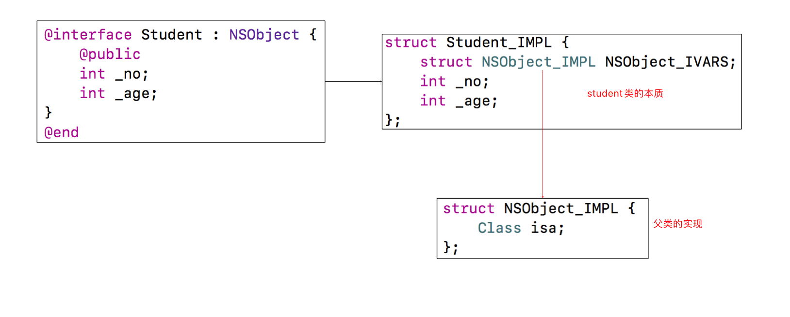
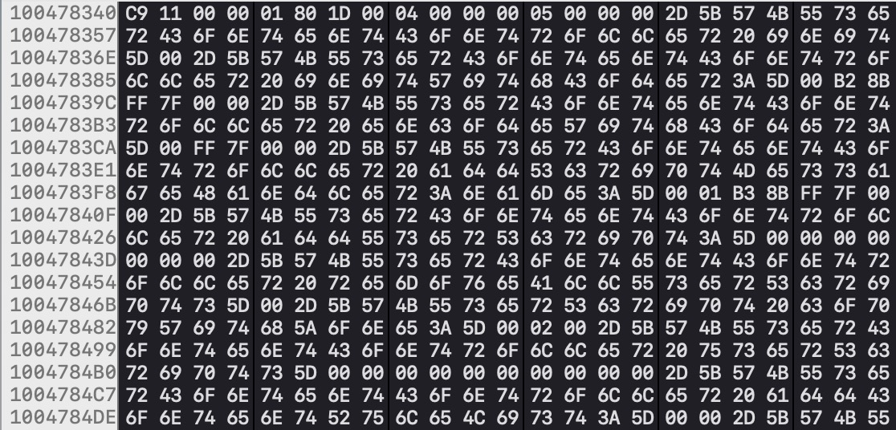

前言
记录一下知识点
知识点
1. 一个NSObject对象占用多少内存？
创建一个NSObject对象需要分配16个字节（通过malloc_size函数获得）,但NSObject对象内部只使用了8个字节的空间(64bit环境下，可以通过class_getInstanceSize函数获得）
其实通过追踪源码alloc的实现我们可以看到以下这段代码
1 | // Class's ivar size rounded up to a pointer-size boundary. |
class_getInstanceSize()方法是获取对象至少需要占用的内存大小,在内存对齐中以8字节为基准(isa占8个字节),也就是通过class_getInstanceSize()方法获取的内存大小是8的倍数.
malloc_size()方法是获取系统给对象实际分配的内存大小,也会有一个对齐动作,对齐的基数是16个字节,也就是说分配的内存是16的倍数.#define NANO_MAX_SIZE 256 /* Buckets sized {16, 32, 48, ..., 256} */
sizeof()这个其实是一个运算符,在编译期间就已经确定的,用来计算传进去的类型大小,例如sizeof(int),实际上就是计算int类型所占的内存大小也就是4个字节.
2. 自定义一个Student对象,怎么计算它所占的内存?

1 | @interface Student : NSObject |
3. 需要注意的一点是iOS下的内存分配是小端模式也就是读取数据是从高地址开始读的.
- 关于大小端模式我的理解
- 大端模式是数据的高字节保存在内存的低地址中,低字节保存在内存的高地址中,读取数据的时候我们是从低地址->高地址
- 小端模式是数据高字节保存在内存的高地址中,低字节保存在内存的低地址中,读取数据的时候我们是从高地址->低地址
- 关于高字节和低字节我们可以举个例子.比如有个10进制数据2000,转换成16进制就是0x7d0,其中7就是高字节,0就是低字节
- 一般数据读取我都是习惯高字节->低字节
1 | Student *stu = [[Student alloc] init]; |
以上面个实例为例,我这边调试在Xcode的view memory中(见下面的内存分配图)看到其内存分配为(从左到右从上到下是低地址到高地址)
C9 11 00 00 01 80 1D 00 04 00 00 00 05 00 00 00
stu的isa指针占8个字节,即C9 11 00 00 01 80 1D 00
_no 占4个字节,即04 00 00 00
_age占4个字节,即05 00 00 00
因为是小端模式读取可以看到_no就是0x00000004,_age为0x00000005
如果按照大端模式那就是_no:0x04000000 _age:0x05000000 这是不对的

结论
- OC对象的本质是什么?
OC对象的本质是C/C++的结构体.1
2
3
4
5
6
7
8
9
10
11
12
13
14
15
16
17
18//NSObject对象的本质就是NSObject_IMPL结构体
NSObject *obj = [[NSObject alloc] init];
struct NSObject_IMPL {
Class isa;
}
//Student对象的本质就是NSObject_IMPL结构体
@interface Student : NSObject
{
@public
int _no;
int _age;
}
struct Student_IMPL {
Class isa;
int _no;
int _age;
}